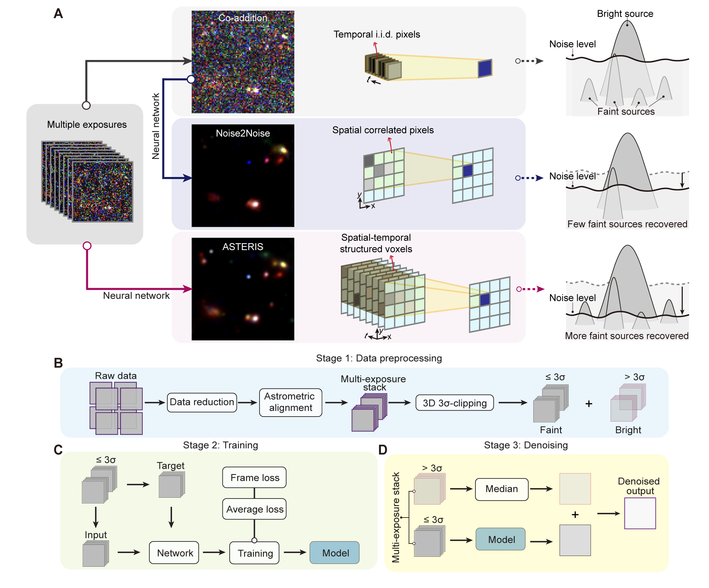
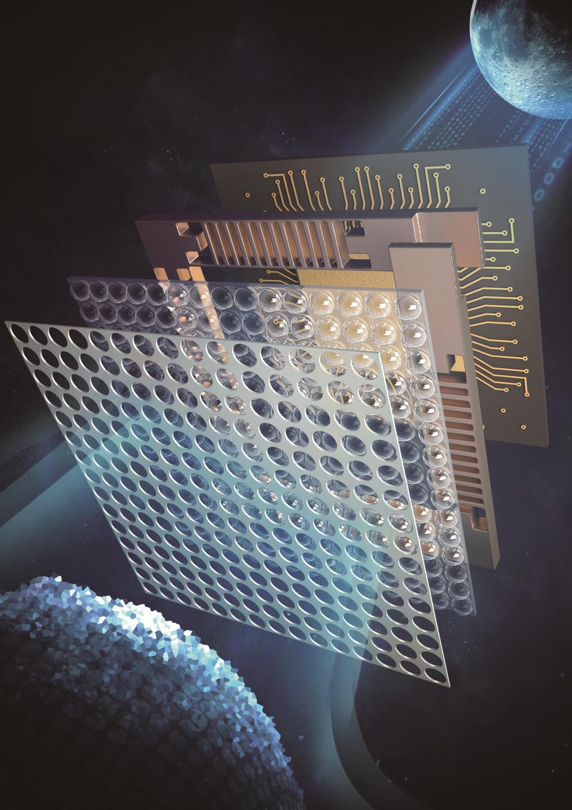

About Me
I am currently an Assistant Research Fellow (Postdoctoral Fellow) in the Department of Automation at Tsinghua University, working under the supervision of Professor Qionghai Dai. I received my Ph.D. in Information and Communication Engineering from Tsinghua University in 2024.
My research is dedicated to the advancement of Physics-informed AI for Science — a field aimed at dissolving the binary boundary between physical hardware and computational intelligence. By embedding fundamental physical laws directly into neural network architectures, I ensure high fidelity and scientific trustworthiness, even when operating under extreme conditions. Furthermore, by utilizing AI models to guide and inspire hardware design, I aim to transcend detection limits imposed by classical physics. This approach establishes a new paradigm for scientific discovery, designed to catalyze breakthroughs across complex domains, including optics, astronomy, and remote sensing.
In addition to my research, I serve as a reviewer for Nature, IEEE TCSVT, Optica, and Optics Express. I am also an Executive Editor for the special issue 'Intelligent Optical Astronomical Observation Technology' in Laser & Optoelectronics Progress.
🏆 Representative Publications

We present ASTERIS, an astronomical self-supervised transformer-based denoising algorithm that integrates spatiotemporal information across multiple exposures. ASTERIS improves detection limits by 1.0 magnitude at 90% completeness and purity, while preserving photometric accuracy. Applied to deep JWST images, ASTERIS identifies three times more redshift ≳9 galaxy candidates with rest-frame UV luminosity 1.0 magnitude fainter than previous methods.

We develop a light-field-based wide-field wavefront sensor (WWS) achieving direct observation of atmospheric turbulence over 1,100 arcsec at 30 Hz, with turbulence dynamics prediction within 33 ms. Described by MIT Prof. Dirk Englund as the state-of-the-art real-time wavefront sensing chip.

We propose a meta-imaging sensor achieving gigapixel photography with a single spherical lens, enabling multisite aberration correction across 1,000 arcseconds on an 80-cm ground-based telescope. Recognized as one of China's Top 10 Optical Breakthroughs.
🎖 Honors and Awards
- 2025Young Elite Scientists Sponsorship Program of the Beijing High Innovation Plan
- 2024Tsinghua University Shuimu Scholars
- 2024Outstanding Doctoral Dissertation, Chinese Institute of Electronics (CIE)
- 2024Beijing Outstanding Graduates
- 2024Tsinghua University Outstanding Doctoral Dissertation
- 2024Tsinghua University Academic Rising Star (Top 10 per year)
- 2023National Scholarship
- 2023International Congress of Basic Science (ICBS) Frontiers of Science Award
- 2022Top 10 Optical Breakthroughs in China
- 2023Best Oral Presentation Award, Graduate Forum of the Chinese Optical Society
- 2023Tsinghua University Future Leaders Scholarship
- 2023Tsinghua University First-Class School Scholarship
- 2022Tsinghua University Future Leaders Scholarship